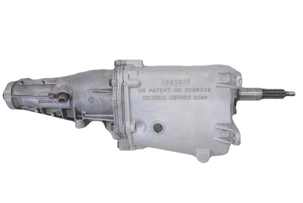

Muncie M-21 4 Speed Transmission 3885010 Chevy Buick Pontiac Olds GM
3885010
Vintage Muncie M-21 close-ratio 4-speed manual transmission using the 3885010 case, associated with classic GM Chevrolet, Buick, Pontiac, and Oldsmobile applications.
Call for availability